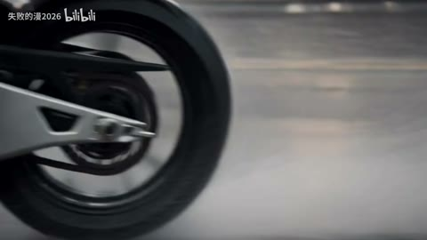

← 案例图谱H25 / 主要视觉研究样本
电影混剪 | 愿你有一天终将与重要的人相遇
红鲤鱼新还是绿鲤鱼新 · 261.9万播放快照 · ≥10万 · B站原作 ↗
连接的力量来自相遇、凝视和接吻等共同意象。摄影原本已经优秀，剪辑者的表达在于选择、顺序和停留。
 约260.800秒 · 案例代表帧
约260.800秒 · 案例代表帧从画面里找依据
这一例先看什么
依相遇、对视、亲吻等动作意象串联多部电影，花田远景与近景对照；低特效密度仍有选材价值。
审美判断
黑底小白字留白充分，中英字幕以片源样式为主，脸部主体清楚；样式未全片统一。
迁移到自己的题材
纪念混剪、品牌回顾、旅行、纪录短片、情绪随笔、多来源素材的主题表达。
教学提问：两个镜头为什么必须相邻？是共享意象、动作阶段、色彩，还是只是都很好看？
带画面的分析单元
图像标出取样时间，对应观察中的关键状态。单帧不能独立证明运动，连续性请结合摘录。表达作用与应用场景是教学解读，复现路线是建议，不是原作者工程还原。
分析单元 01 / 0—7.667秒
黑底白字引子／居中留白／字卡替换
实际观察
开头黑底中央为小号白色中文短句，0–1秒同一句，1.333秒换下一句，3.000秒再次换句，4.333秒变成长行，7.333秒已进入人群实拍。没有在所查开头采样中确认复杂文字粒子或描边弹跳。
表达作用（教学解读）
把阅读顺序变成观看顺序；用字重、位置与停留表达强调、犹豫或压迫。
具体应用场景
观点短片、歌词视觉、人物宣言、章节、情绪高潮；先决定哪些词必须读懂，哪些只是纹理。
复现建议（非原作者工程还原）
定义字卡文本、起止时间和居中锚点，纯黑背景按时间替换；保持统一字距与阅读停留。采样3次/秒不能断定每个切换是否有短暂淡化。
直出判断：容易，已有文案和时序即可直接渲染
常见误用：每个字都弹跳、整句停留不足、所有文字同时争主位。严肃叙事里无理由的回弹会削弱重量。
分析单元 02 / 17.1—19.033秒
电影画面直接切接／景别与色彩对照
实际观察
17.100秒仍为人物近景，17.167秒直接变为黄花田中的小人物远景；17.167–18.967秒花田构图持续；19.033秒直接变成人群场景。没有在这两个所查边界发现遮罩、闪白、RGB故障等过渡帧。
表达作用（教学解读）
让一次画面替换有理由：继续动作、转换观点、给反应，或通过相似形状建立联系。
具体应用场景
动作、对话、运动、情绪混剪、多来源的视觉联系。
复现建议（非原作者工程还原）
按入出点裁切素材并拼接，优先选主体位置、景别、色彩和情绪有对照的画面。素材原剪点可能包含在取段内，未比对原电影，不能全部归为UP新增切点。
直出判断：剪接机制容易，合适电影素材、情绪顺序和取舍需要人工策划
常见误用：只匹配颜色不顾动作阶段；方向突变；每次连接都加过渡掩盖问题。
分析单元 03 / 24—354秒
底部中英双行字幕／白字轮廓与阴影
实际观察
多个概览片段在画面底部或黑边内出现中文主行、英文小行，部分字体发浅蓝或带深色边缘；也有只中文或完全无字幕的片段。样式并非全片统一。
表达作用（教学解读）
通过变化与稳定的比例让信息有轻重。视觉密度来自切镜、版式与局部动画三个层面，不只靠刀数。
具体应用场景
所有形式；尤其高潮前的蓄力、解释段的阅读、回忆段的停留和快慢对照。
复现建议（非原作者工程还原）
可用ASS/字幕渲染器设置中英字号、行距、描边和下边距；字幕先标注角色/文本和起止点，再渲染。现存字可能已烘焙在所用电影资源，未比对源片，不能断言全由UP新排。
直出判断：排版容易；正确译文、时间轴与底图可读性需校对
常见误用：全片等密度；把闪帧当新镜；高切速被当成质量分；没有稳定段供观众理解。
分析单元 04 / 151.2—153.133秒
同一动作意象串联／接吻蒙太奇／硬切节奏
实际观察
151.200秒一组接吻人物，151.467秒换第二组，152.400秒换第三组，153.133秒切到动画群像。前两次以相近动作和近景构图维持连续感，最后用不同材质画面形成段落变化。没有据此确认光流变形或无缝人物变身。
表达作用（教学解读）
通过变化与稳定的比例让信息有轻重。视觉密度来自切镜、版式与局部动画三个层面，不只靠刀数。
具体应用场景
所有形式；尤其高潮前的蓄力、解释段的阅读、回忆段的停留和快慢对照。
复现建议（非原作者工程还原）
把不同影片中的相同动作/关系选为剪接锚点，裁切时对齐动作阶段和脸部位置，按时间表直接切接；可适度裁幅但本次未验证是否进行了额外重构图。
直出判断：已有选定素材后容易导出，自动理解动作与情感并选片不属于简单一键
常见误用：全片等密度；把闪帧当新镜；高切速被当成质量分；没有稳定段供观众理解。
分析单元 05 / 72—300秒
宽银幕黑边／保留原片画幅／摄影色彩与浅景深（来源待分）
实际观察
不少片段上下带黑边，部分近景眼睛/脸部清楚而前后景模糊；108秒绿水暖光、192秒人物特写、294秒夜景彩色散景等视觉差异随片源变化。不能把这些原电影摄影外观当作UP新增散景、调色或景深特效。
表达作用（教学解读）
决定什么值得看、什么退到感受层；清晰与模糊、占满与留空之间的关系塑造语气。
具体应用场景
回忆、亲密、孤独、人物介绍、信息减负、画面间的呼吸。
复现建议（非原作者工程还原）
剪辑导出可按原比例缩放后pad黑边；若需要新调色可单独匹配各片曝光/色温。但本片是否额外加黑边、统一调色或后期背景虚化，没有原片对照证据。
直出判断：保画幅和加黑边容易；复现原摄影、灯光与景深需要合适素材，不能仅靠代码凭空补齐
常见误用：模糊所有层；细字落在高亮区域；浅色误认为高级；没有清楚的主焦点。
分析单元 06 / 257—260.933秒
正反打切接／窗光与窗帘遮挡（原片画内运动）
实际观察
257.000秒男生读书，257.067秒切到女生坐在书架前；259.133秒切回男生。白窗帘随后持续摆动，到260.8秒后逐渐遮住脸部和书本。这是画内实物连续移动的外观，不应记成剪辑师添加的一次白色擦除转场；没有在所查窗尾确认后继场景。
表达作用（教学解读）
让一次画面替换有理由：继续动作、转换观点、给反应，或通过相似形状建立联系。
具体应用场景
动作、对话、运动、情绪混剪、多来源的视觉联系。
复现建议（非原作者工程还原）
正反打按视线和动作顺序取段；窗光、头发细节与窗帘半透明透光优先保留原摄影素材。要另做类似遮挡转场才需独立窗帘蒙版/透明素材，并非本片已证实操作。
直出判断：现成素材剪接容易；逼真半透明布料运动和光照不属于简单代码直出
常见误用：只匹配颜色不顾动作阶段；方向突变；每次连接都加过渡掩盖问题。
用连续画面核对
保留原研究的多段局部摘录。片段含音轨不代表已听审；本资料不评价音乐卡点或对白节奏。
短时变化怎样理解
151.2–153.2秒三次，17.1–19.1秒两次；257秒窗正反打两次，窗帘遮脸是源片实物运动。
把镜头连接、版式更新、局部图层变化和镜内运动分开记录。所查窗口是下限，不是全片平均或AI／人工排名。
原始逐窗记录 →这次练习的约束
用六个不同来源的画面分别按“同动作、同颜色、同主题”排三版，写下每版新增的含义，而不只说顺滑。
先写“我希望观众明白／感到什么”，再选本页的一种手法。完成无效果基础版后再加层；解释新增层带来的收益和代价。
打开练习与复盘表 →来源、观看范围与制作归属
实际检查范围：实际view_image看完61张概览（0–360秒，每6秒一张，4张表）；两密集窗151.200–153.133、17.100–19.033秒各30张、各2表均已查看；另选开头0–7.667秒24张（3样本/秒、2表）、257.000–260.933秒60张（15样本/秒、4表），均已查看。源1920×1080，封装全长约365.674秒，编码帧率30fps；局部15样本/秒不证明原电影原生30fps。概览非全片逐帧覆盖，未连续全片播放、未听审音轨，不评价声音卡点或台词声桥。
制作线索：第一方页面 https://www.bilibili.com/video/BV1q441177e9/ 保存快照261.9万播放，2019-05-17，UP红鲤鱼新还是绿鲤鱼新；配乐标注やわらかな光。本次实际检查已取得源媒体，页面核实由主任务完成；配乐署名不等于已听审。电影片段中的摄影、表演、场景调度和原有画内特效不能归为UP新增特效。
边界：摄影、浅景深、表演与片源字幕不能全归UP新增。保留作动作意象剪接样本，未核声音叙事。
播放快照保存时间（UTC）：2026-10-20T08:15:48.855054+00:00。H30制作方式为推定；同源改编、仿作和转载依原记录标注。
原始案例记录 · 选样表把你的判断留下来
笔记仅尝试保存在本机浏览器；浏览器策略可能限制本地文件存储，重要内容请导出。
沿着同一问题继续阅读

AI40方向、冲击与节奏
潮湿未来城市、床边日常、纸马、摩托细节、港口与像素片尾多种段落，人物反应与道具串联。
主要样本8个分析单元
 AI47
AI47细节、反应与转折
星空漂浮、舞厅、卡通群岛、玩偶舞台形成不同媒介段落；服装与双人关系作为锚点，场景丰富度不能仅归功剪辑转场。
主要样本7个分析单元
 AI13
AI13方向、冲击与节奏
前段日照庭院的喜剧反应与后段冷暖室内、绿焰幻象区分，眼镜绿火、面具和手中道具特写可作为局部效果例。
主要样本8个分析单元